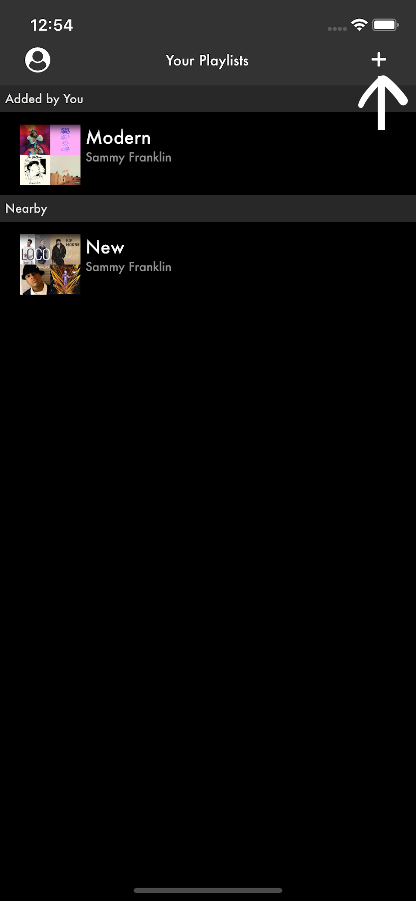
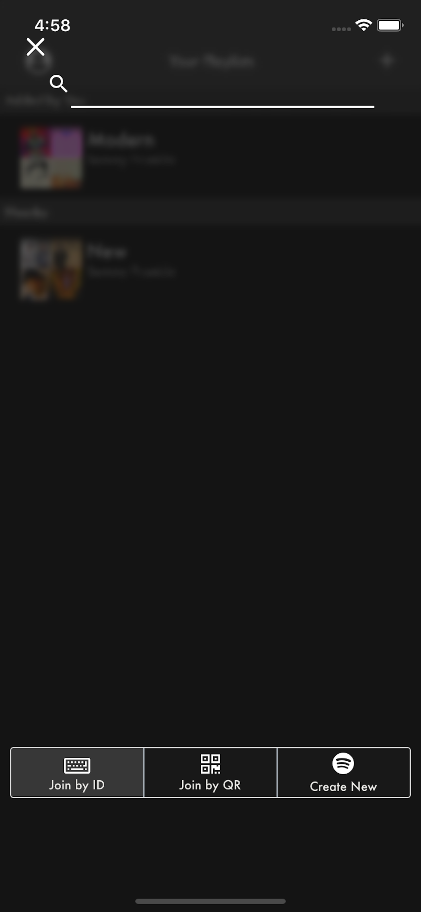
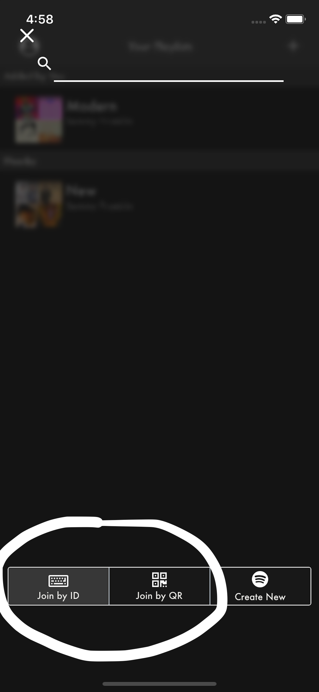
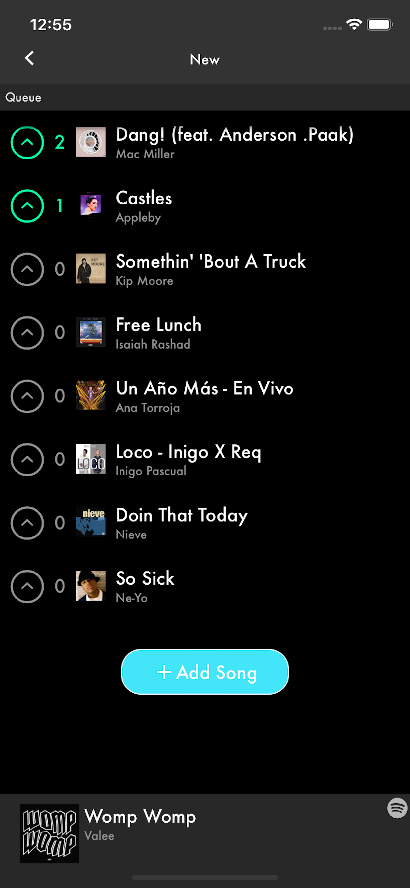
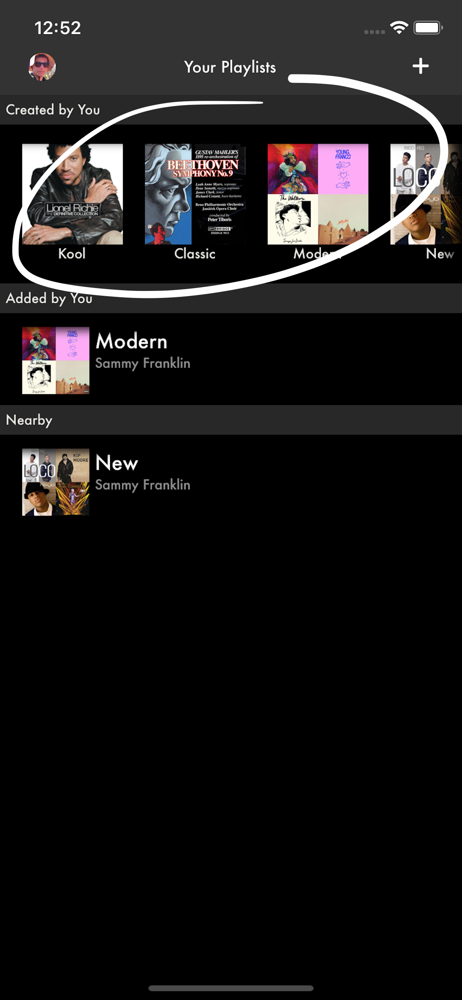
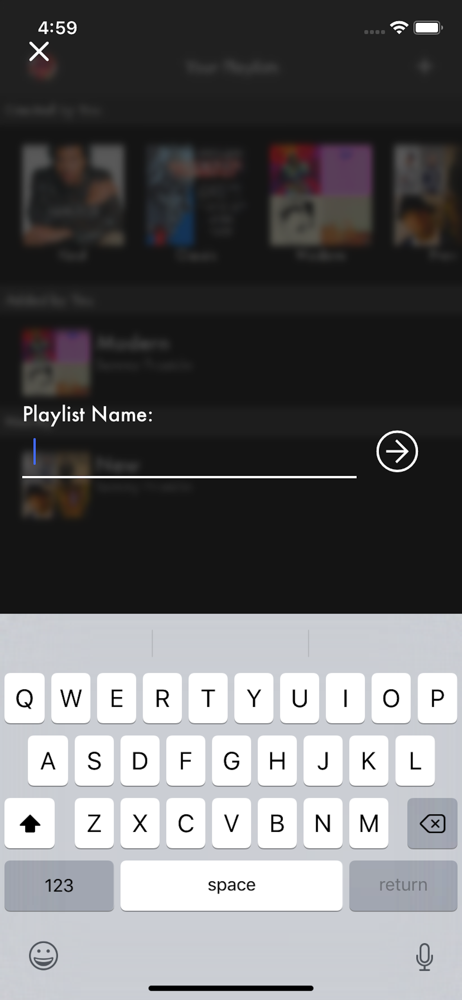
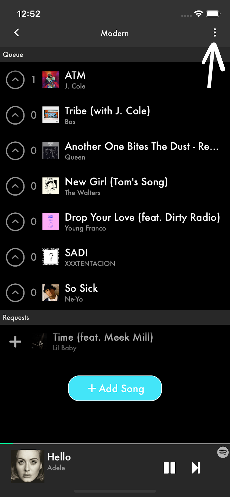
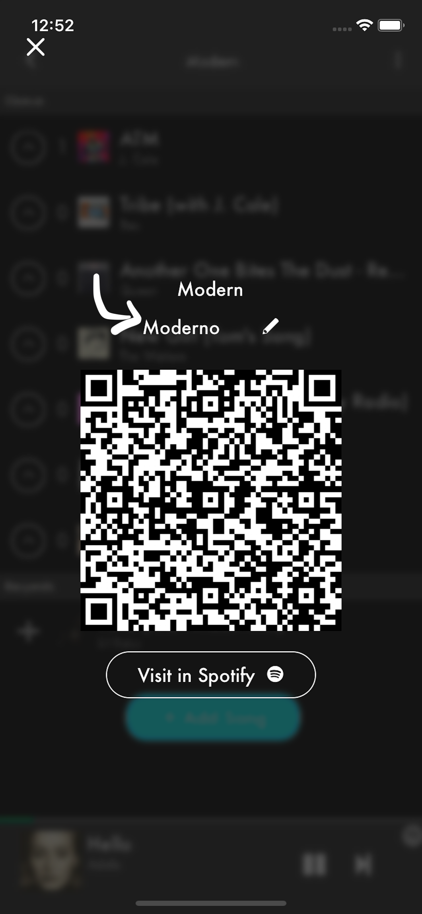
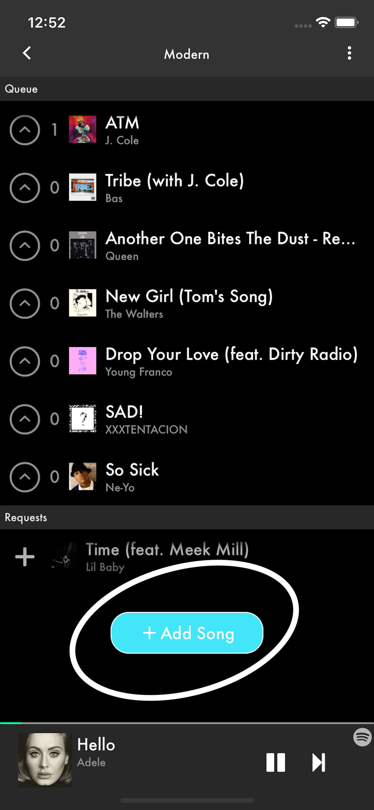

Limelight Support
With Limelight, you'll be able to connect to a Spotify-integrated jukebox and add/vote songs on a music queue.
For any questions or concerns, you can contact spotlighthelp@gmail.com.
To view Limelight's privacy policy, visit Privacy Policy.
How do I connect to a music queue?
- Tap on the '+' icon in the top right of the screen.

- You should be prompted with the following view:

- You can join one by entering an invitational code (if the host has set one up) or by capturing the host's QR code using the buttons at the bottom.

- Once connected, you can enter the music queue or playlist by tapping on it.

How do I host a music queue?
- Make sure you are logged in with a Spotify Premium account.
- Your Spotify playlists should be shown at the top. You can use any of these for your music queue, or you can create a new one (using the '+' button).

- If you chose to use an existing playlist from your Spotify account, tap on it and go to step 6, or else, go to the next step.
- Submit the name of the playlist that you wish to create.

- Tap on your newly created playlist.
- Now, you can host a music queue, using this playlist! You may create a invitation code by tapping the top right icon.

- And tap on the editable text

- You can also add songs to this playlists through the Limelight app or through any Spotify app.

How do I enable my music queue's geolocation, so that users may able to connect to my queue when they are nearby?
Please, contact spotlighthelp@gmail.com and request geolocation. The subject should be "Geolocation Request", and make sure to include the following details in the message body:
- Full name
- Business (if applicable)
- Name of the playlist
- Name of your Spotify account (your display name for Spotify)